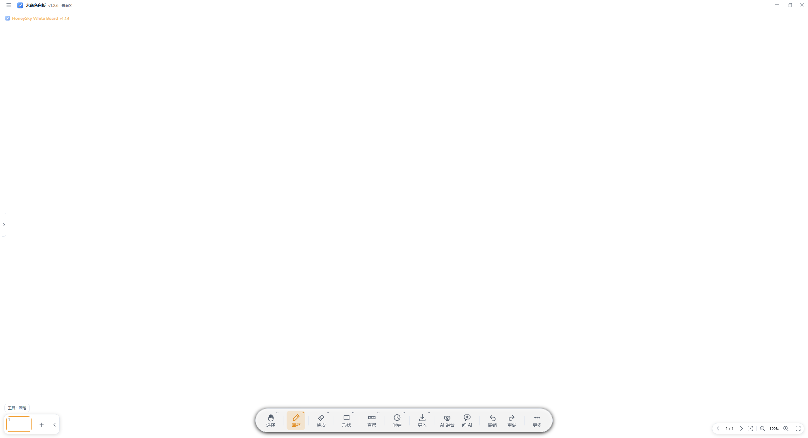
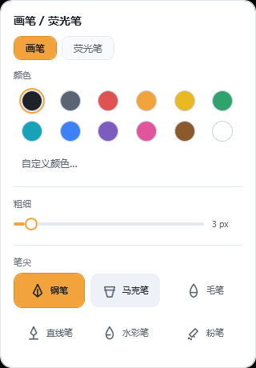
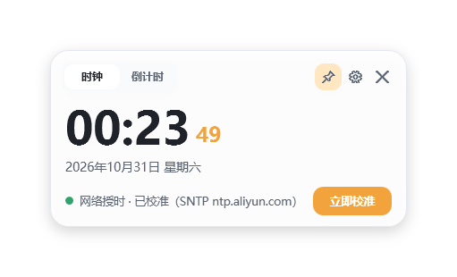
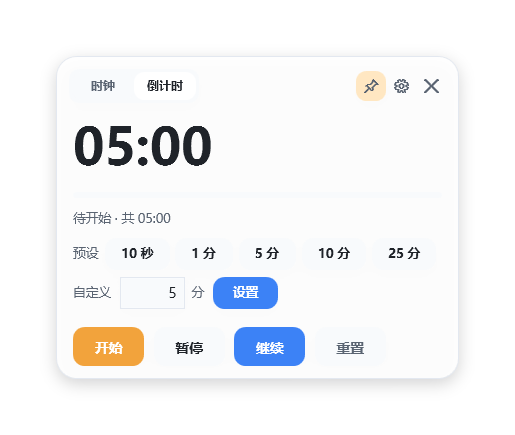
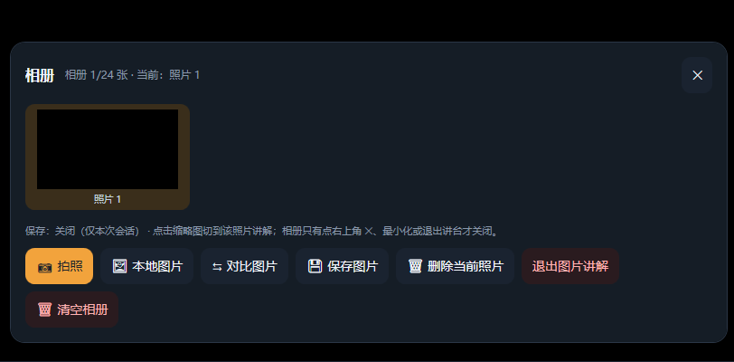
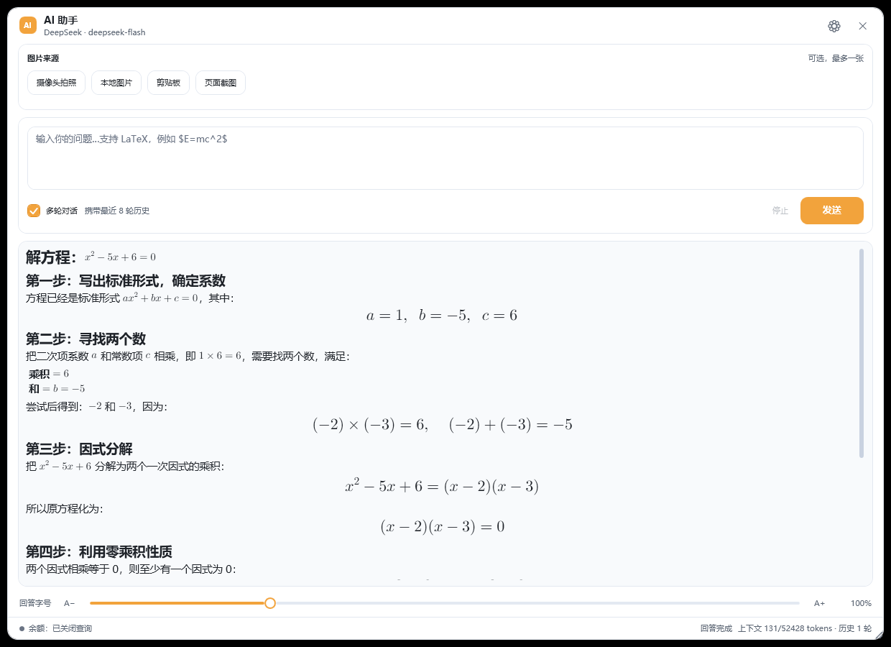
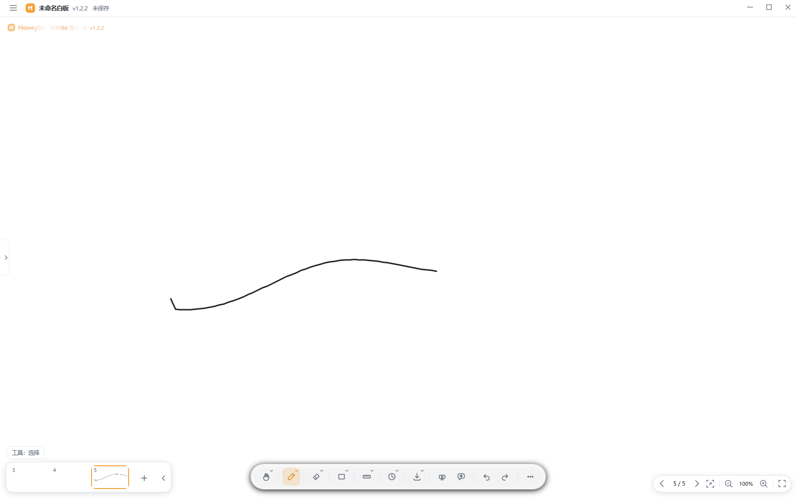
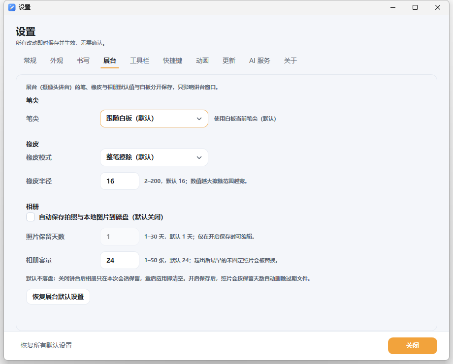
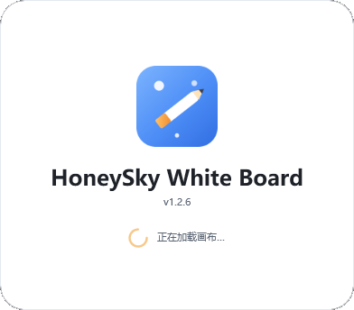
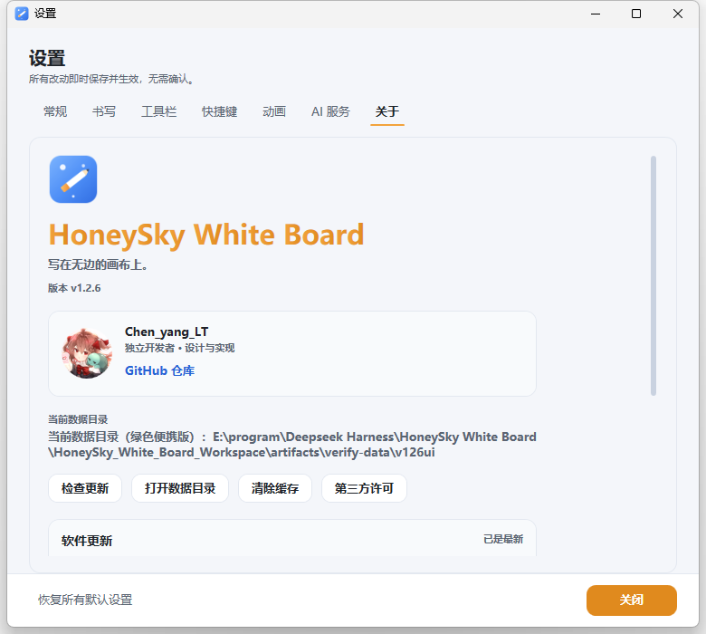

半透明荧光笔
粉笔质感的高亮，叠在文字上不遮字，粗细可调。
Windows 桌面白板 · v1.2.6.1
写在无边的画布上。
一支笔，一块无边的白板，和一个随时待命的 AI。为 Windows 打造，压感书写与全部工具都在本地运行。
免费下载 · Windows 10 / 11 · x64

功能
从一支笔开始，到 AI 讲台答题。每一处细节都为「讲清楚一件事」而设计。
书写与笔触
笔迹平滑与压感整笔重绘，250 Hz 采样下依然跟手。橡皮可整笔擦除，也可局部擦除；手指绘画默认关闭，避免误触。

时间工具新
时钟与倒计时是始终置顶的独立窗口，不遮挡板书：字号与背景透明度都能调，字号放大后文字依然清晰。


AI 讲台与助手
把题目交给 AI 讲台：拍下纸张、贴入图片，AI 在白板上边写边讲，支持 LaTeX 公式；画面可调分辨率、色温与亮度，底栏能直接缩放，拍下的照片收进常驻相册对比讲解。日常答疑则交给角落里的 AI 助手浮窗。


AI 功能为可选能力，使用你自己的 OpenAI 兼容接口与 API Key；密钥经 Windows DPAPI 加密保存在本机。
页面与工具
一节课不止一页：缩略图栏随手翻页，导入的文档有页码、滑条与目录，缩放与适应窗口一键到位。工具栏里的工具能显示、固定、上下调序，画布右键还能复制、剪切、粘贴与置顶置底。


还有这些
粉笔质感的高亮，叠在文字上不遮字，粗细可调。
屏幕上拉一把直尺，或画一个精确的圆，讲几何课很省事。
定时自动保存，异常退出后下次启动可恢复上次的白板。
白板、纸张、深色背景随意换；一键导出高清图片。
P 画笔、E 橡皮、K 时钟……常用操作都有快捷键。
浅色与深色主题，工具条与面板为课堂而不是为炫技而存在。
v1.2.6.1 新增新
这一版把讲台的操作密度收了一收：底栏能直接缩放画面，拍照和相册合并成一个入口，相册常驻、随手翻看与保存；白板、讲台与 AI 助手不再互相置顶（时钟与倒计时仍然置顶）；照片默认不落盘，需要时能在设置里按天保留；设置拆成 10 个页签，展台有独立一页。
底栏新增 − / + 与当前倍率（从 1.0× 起），讲到细节时放大画面不用换页；缩放后笔迹、批注与拍照都跟着当前画面走。
底栏的「拍照」拍完直接收进相册，不再有下拉菜单；「相册」常驻底栏，随时打开、对比、保存或清空。
白板、AI 讲台与 AI 助手互不压层，切回来还是刚才那一层；时钟与倒计时仍是独立的置顶窗口，讲课时始终可见。
相册从临时弹层变成常驻入口：支持本地图片、对比图片、保存图片、删除当前照片与退出图片讲解，一次讲解最多保留 24 张。
关闭讲台后照片只在本次会话保留；在「设置 → 展台」开启「自动保存拍照与本地图片到磁盘」后，可设保留天数（1–30 天）与相册容量（1–50 张），过期自动删除。
讲台底栏右下角常驻「最小化」与「退出讲台」，不再藏进右上角菜单，全屏讲解时也不用先找按钮。
笔尖可「跟随白板」或固定六种笔形之一（钢笔 / 马克笔 / 毛笔 / 直线笔 / 水彩 / 粉笔）；橡皮可整笔擦除或局部擦除，半径单独可调。
常规 / 外观 / 书写 / 展台 / 工具栏 / 快捷键 / 动画 / 更新 / AI 服务 / 关于，十个页签各管一段；展台页集中笔尖、橡皮、相册与保留策略。


v1.2.6 的讲台画面设置、六种笔尖、PPT 预取、时钟独立窗口与更新源自选都还在。
系统要求
安装包自带 .NET 8 运行时，不需要你另外装环境。
系统
Windows 10 1809+ / Windows 11
架构
x64
内存
4 GB 及以上
运行时
.NET 8（随包自带）
建议 1280×800 及以上分辨率；支持触控笔与触屏，也支持鼠标。
下载
三个安装形态，内容完全一致。所有产物都列在 GitHub Releases，并附 SHA-256 校验和。
推荐
HoneySkyWhiteBoard-1.2.6.1-win-x64-setup.exe
双击安装，自动创建桌面快捷方式与 .hswb 文件关联，可在系统设置里卸载。
前往 GitHub Releases批量部署
HoneySkyWhiteBoard-1.2.6.1-win-x64.msi
适合组策略、Intune 等企业分发，支持静默安装与标准卸载。
前往 GitHub Releases免安装
HoneySkyWhiteBoard-1.2.6.1-win-x64-portable.zip
解压即用，不写注册表；数据默认保存在本地应用数据目录，可随包携带。
前往 GitHub ReleasesSHA-256 校验和
每个产物的 SHA-256 都写在 Release 附件的 SHA256SUMS.txt 中，可用 certutil -hashfile <文件> SHA256 或 Get-FileHash 核对。
仅提供已签名的二进制分发包，不提供源码。Windows 首次运行时可能提示「未知发布者」，这是未做代码签名的正常表现。